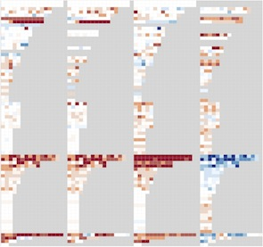

Empirical Guidance on Scatterplot and Dimension Reduction Technique Choices

TVCG (2013)
Authors
Michael Sedlmair, Tamara Munzner, Melanie Tory
Materials
Abstract
To verify cluster separation in high-dimensional data, analysts often reduce the data with a dimension reduction (DR) technique, and then visualize it with 2D Scatterplots, interactive 3D Scatterplots, or Scatterplot Matrices (SPLOMs). With the goal of providing guidance between these visual encoding choices, we conducted an empirical data study in which two human coders manually inspected a broad set of 816 scatterplots derived from 75 datasets, 4 DR techniques, and the 3 previously mentioned scatterplot techniques. Each coder scored all color-coded classes in each scatterplot in terms of their separability from other classes. We analyze the resulting quantitative data with a heatmap approach, and qualitatively discuss interesting scatterplot examples. Our findings reveal that 2D scatterplots are often 'good enough', that is, neither SPLOM nor interactive 3D adds notably more cluster separability with the chosen DR technique. If 2D is not good enough, the most promising approach is to use an alternative DR technique in 2D. Beyond that, SPLOM occasionally adds additional value, and interactive 3D rarely helps but often hurts in terms of poorer class separation and usability. We summarize these results as a workflow model and implications for design. Our results offer guidance to analysts during the DR exploration process.